Dance
Bodies in motion, space transformed — documenting the Metropolitan Ballet of Medellín and their homage to Fernando Botero.
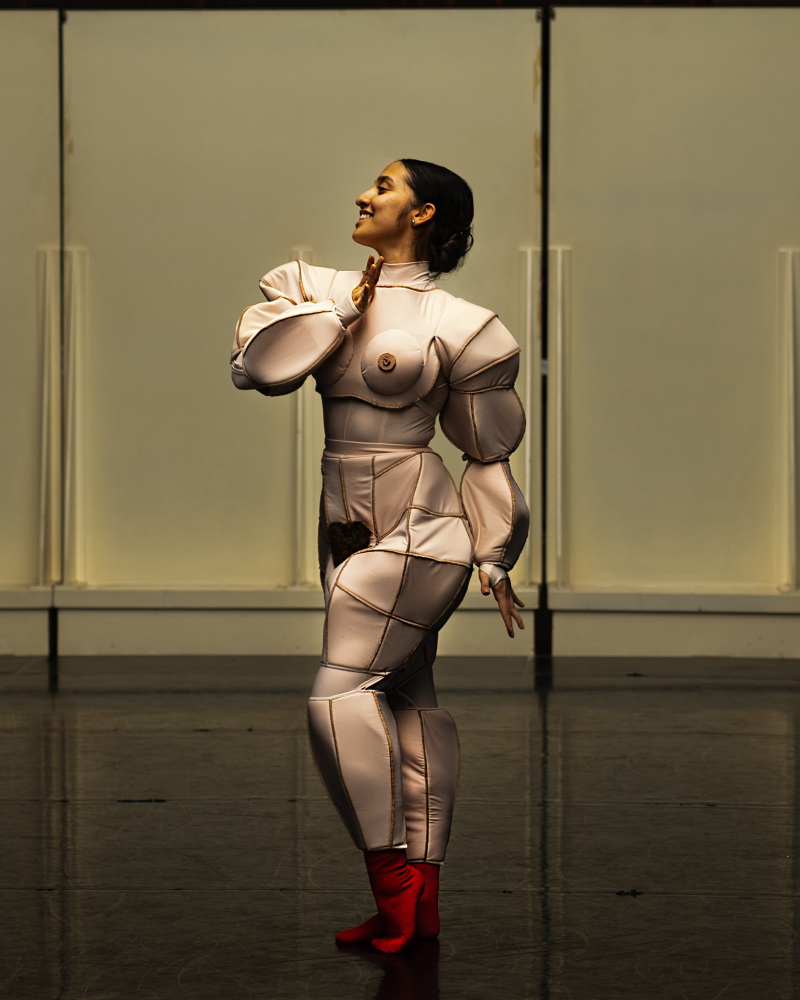
Before the stage —
the rehearsal space.
As the documentary photographer for the rehearsal process of Bolero at Ballet Metropolitano de Medellín, I documented the dancers as they developed the choreography before its premiere. My photographs focus on moments of concentration, collaboration, and movement, capturing the creative process behind the performance.
Rather than documenting the final production, the series offers an intimate insight into the rehearsal space, revealing the discipline, vulnerability, and collective effort that shape a ballet long before it reaches the stage.
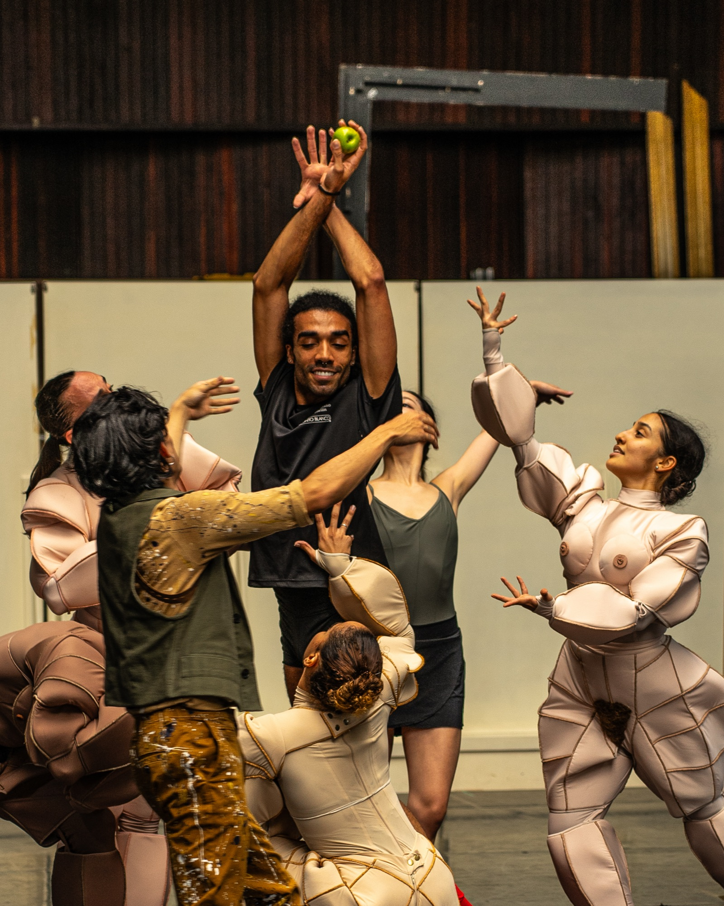
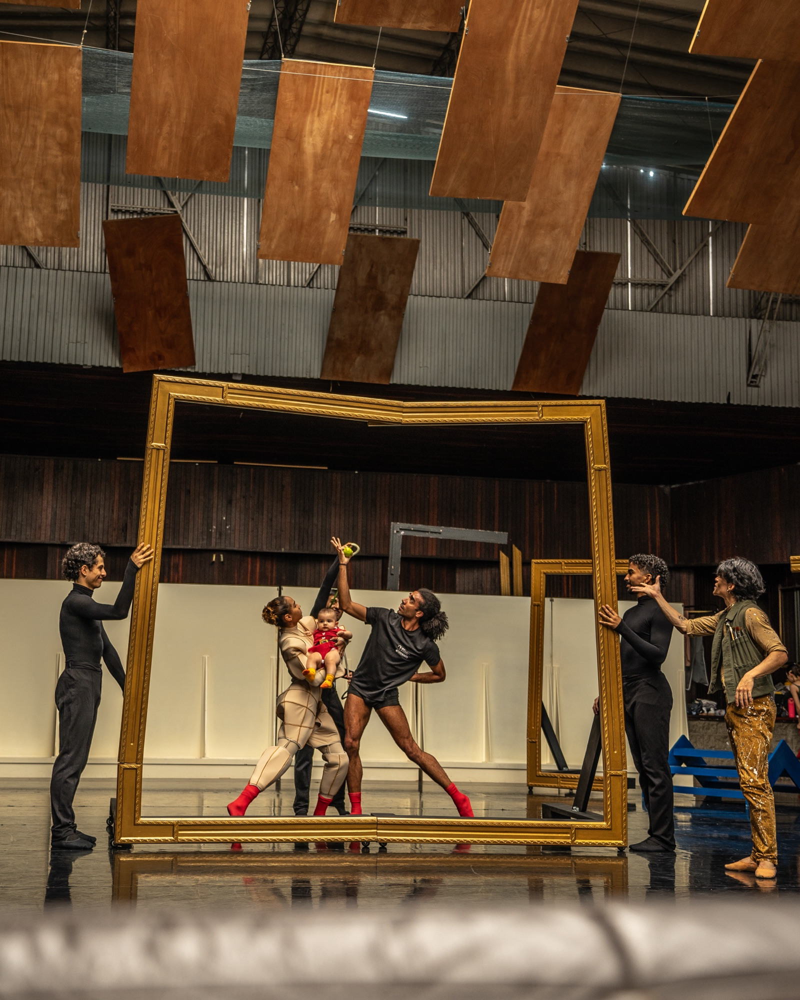

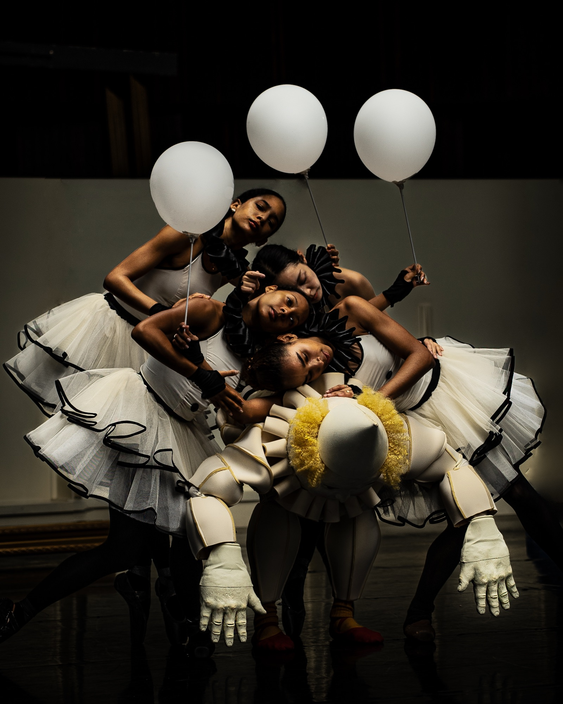


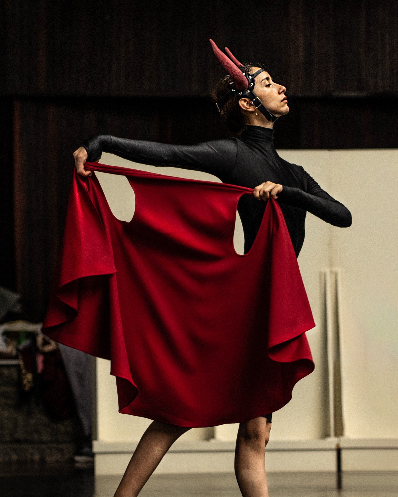
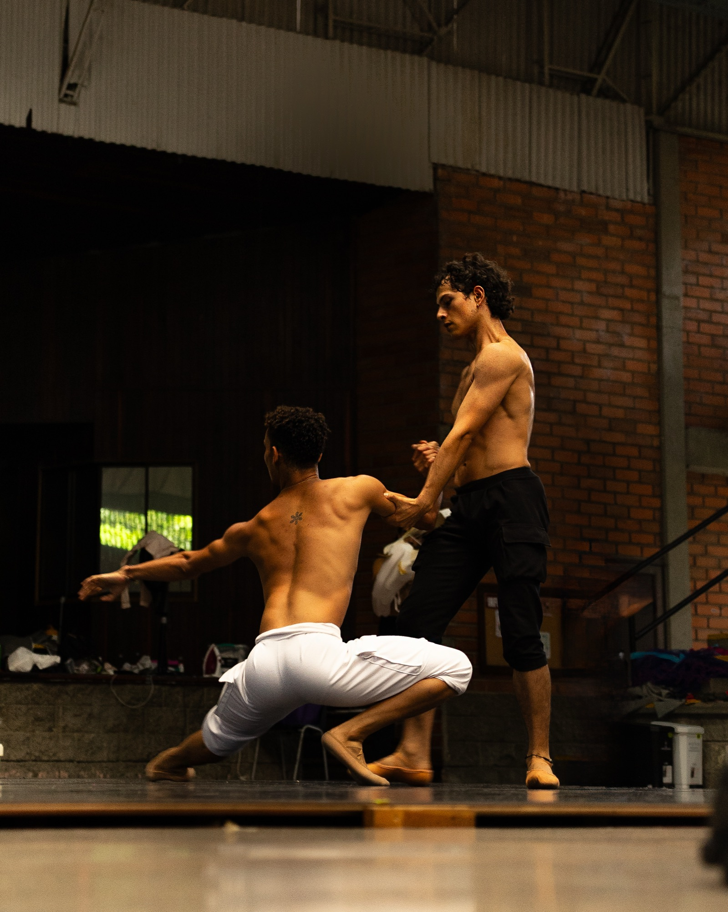
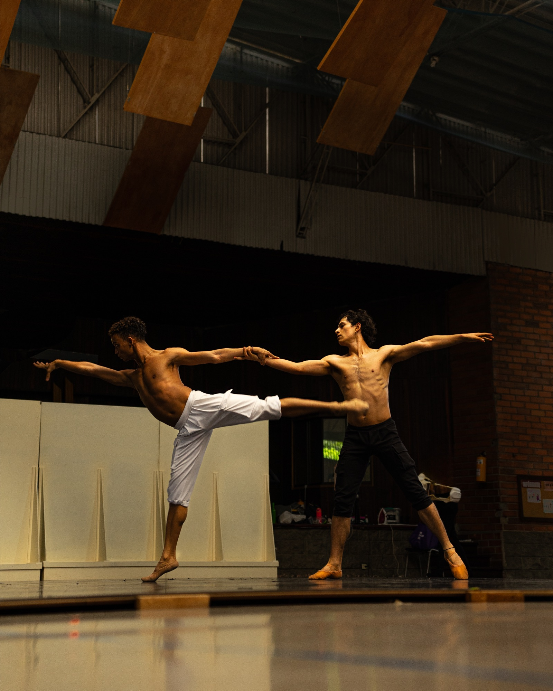
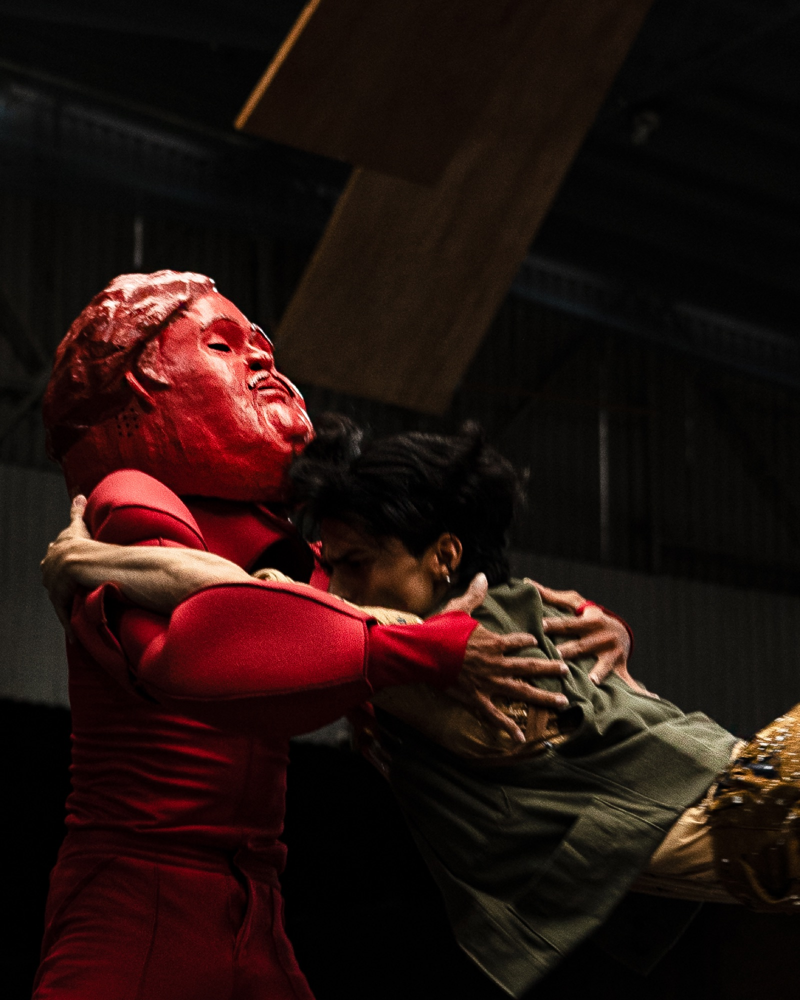
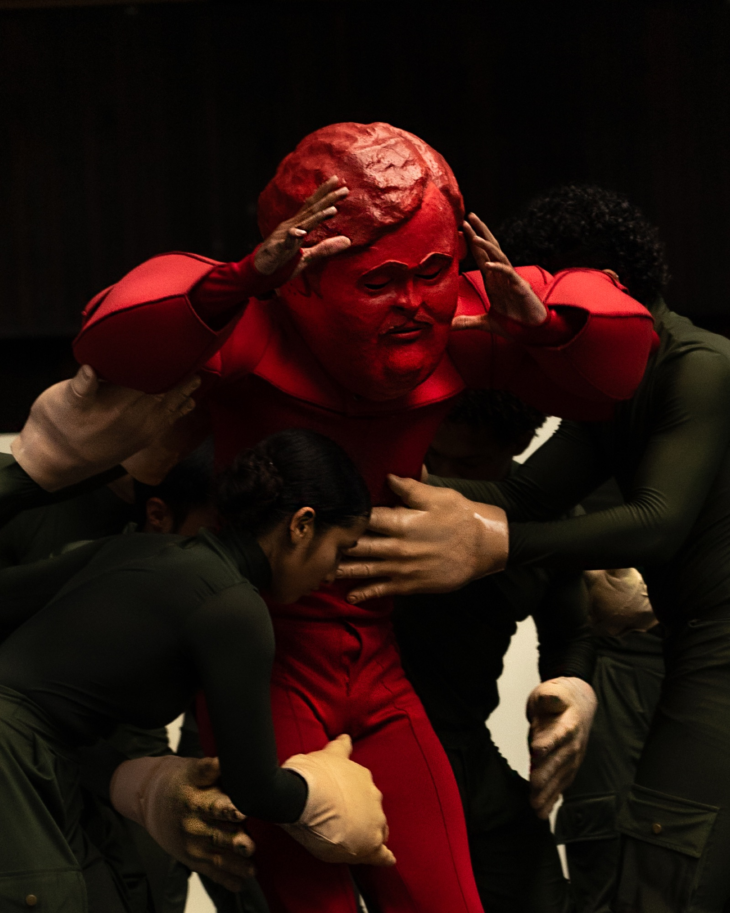
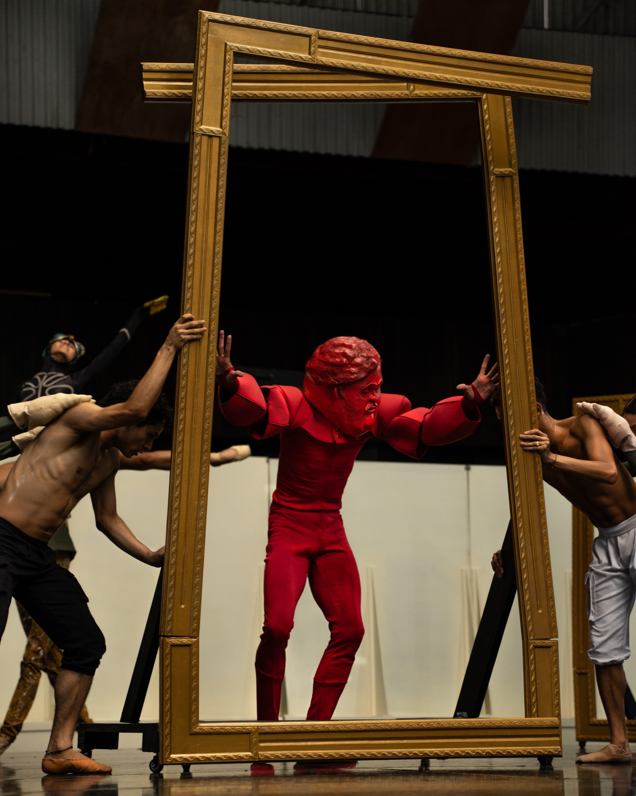
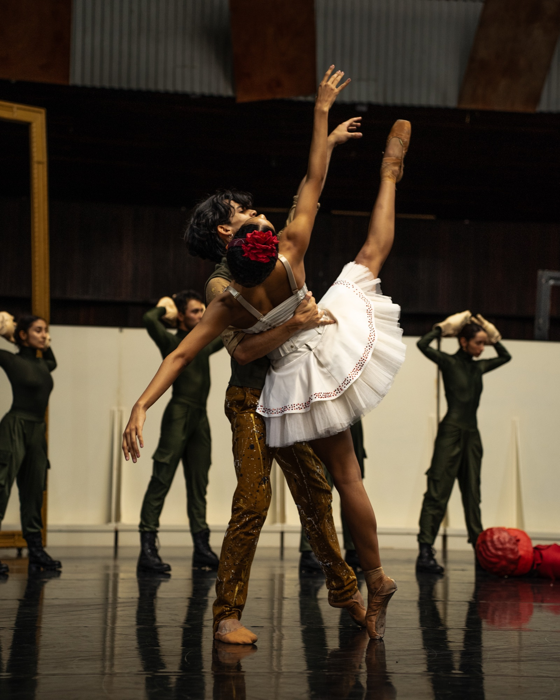
- Discipline
- Photography
Documentary - Company
- Metropolitan Ballet
Medellín, Colombia - Production
- Ballet Botero
- Year
- 2023